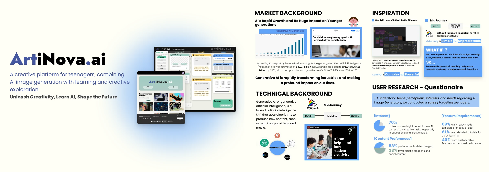
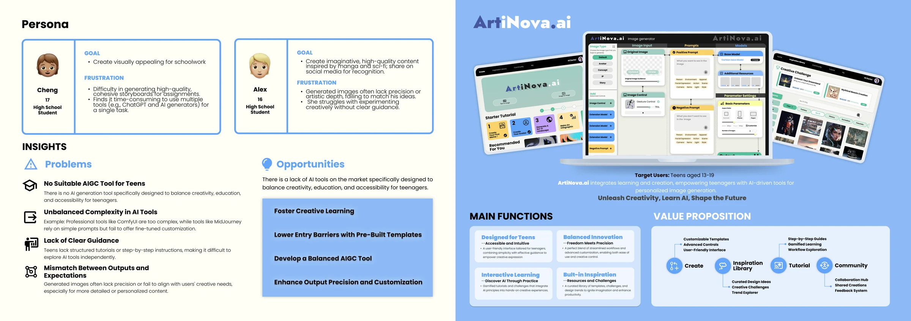

Background
ArtiNova.ai explores the gap between simple prompting interfaces and complex generation workflows. Research with teenagers informed a concept that combines templates, guidance, and adjustable controls for creative learning.

Mechanism
Templates provide a starting point, while tutorials and optional controls let learners take on more complexity gradually. The design brings generation, inspiration, and learning resources into one workspace.

Interaction paradigm
Users select a template, add inputs and control components, adjust prompts or settings, and preview a generated image. Color-coded components make the steps easier to follow and expose additional control when a learner needs it.